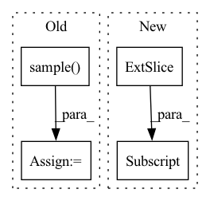

Pattern ID :18017
Before Change
gt_labels)
bbox_sampler = PseudoSampler()
sampling_result = bbox_sampler.sample( assign_result, anchors,
gt_bboxes)
num_valid_anchors = anchors.shape[0]
bbox_targets = torch.zeros_like(anchors)
bbox_weights = torch.zeros_like(anchors)
labels = anchors.new_full((num_valid_anchors,),
self.num_classes,
dtype=torch.long)
label_weights = anchors.new_zeros(num_valid_anchors, dtype=torch.float)
pos_inds = sampling_result.pos_inds
neg_inds = sampling_result.neg_inds
if len(pos_inds) > 0:
pos_bbox_targets = sampling_result.pos_gt_bboxesAfter Change
if not valid_flags.any():
return (None,) * 7
// assign gt and sample anchors
anchors = flat_anchors[valid_flags, :]
num_level_anchors_inside = self.get_num_level_anchors_inside(
num_level_anchors, valid_flags)
assign_result = self.assigner.assign(anchors, num_level_anchors_inside,In pattern: SUPERPATTERN
Frequency: 3
Non-data size: 4
Instances Fragment ID: 59117846
Project Name: rangilyu/nanodet
Commit Name: d422abc2b7162f42226d6aa9380208dec552fd38
Time: 2021-02-18
Author: lyuchqi@gmail.com
File Name: nanodet/model/head/gfl_head.py
M Class Name: GFLHead
N Class Name: GFLHead
M Method Name: gfl_target_single(8)
N Method Name: gfl_target_single(10)
M Parent Class: AnchorHead
N Parent Class: AnchorHead
M File Name: nanodet/model/head/gfl_head.py
N File Name: nanodet/model/head/gfl_head.py
M Start Line: 504
M End Line: 553
N Start Line: 501
N End Line: 535
Before Change
// Apply dropout: Set random sum node children to 0 (-inf in log domain)
if self.dropout > 0.0 and self.training:
dropout_indices = self._bernoulli_dist.sample( x.shape) .bool()
x[dropout_indices] = np.NINF
// Check if padding to next power of 2 is necessaryAfter Change
if self.split_dim == "h":
split_val = self.out_shape[0]
left = x[:, split_val:]
right = x[:, :split_val]
else:
split_val = self.out_shape[1]
left = x[:, :, split_val:]
right = x[:, :, :split_val] Fragment ID: 59117840
Project Name: braun-steven/simple-einet
Commit Name: 6c0a0ca7de9dfbed9f4b0eebd0e015cf76002c2b
Time: 2022-01-05
Author: steven.lang.mz@gmail.com
File Name: simple_einet/einsum_layer.py
M Class Name: EinsumLayer
N Class Name: EinsumLayer
M Method Name: forward(2)
N Method Name: forward(2)
M Parent Class: AbstractLayer
N Parent Class: AbstractLayer
M File Name: simple_einet/einsum_layer.py
N File Name: simple_einet/einsum_layer.py
M Start Line: 91
M End Line: 122
N Start Line: 85
N End Line: 111
Before Change
def choose_action(self, state):
state = torch.unsqueeze(torch.FloatTensor(state), 0)
if np.random.uniform(0, 1) < self.epsilon:
action = self.env.action_space.sample() // Explore action space
else:
action = torch.argmax(self.eval_net(state)).numpy() // Exploit learned values
return actionAfter Change
Returns:
action.
state = state[np.newaxis, :]
action = self.sess.run(self.sample_op, {self.states: state})[0]
return np.clip(action, -self.bound, self.bound)
Fragment ID: 59117834
Project Name: skylark0924/machine-learning-is-all-you-need
Commit Name: 2a04011e72ca9c2780b4ce7375e6274fb2611943
Time: 2020-04-30
Author: 24936522+Skylark0924@users.noreply.github.com
File Name: 16PPO/16PPO.py
M Class Name: Skylark_PPO
N Class Name: Skylark_PPO
M Method Name: choose_action(2)
N Method Name: choose_action(2)
M Parent Class:
N Parent Class:
M File Name: 16PPO/16PPO.py
N File Name: 16PPO/16PPO.py
M Start Line: 36
M End Line: 41
N Start Line: 113
N End Line: 116